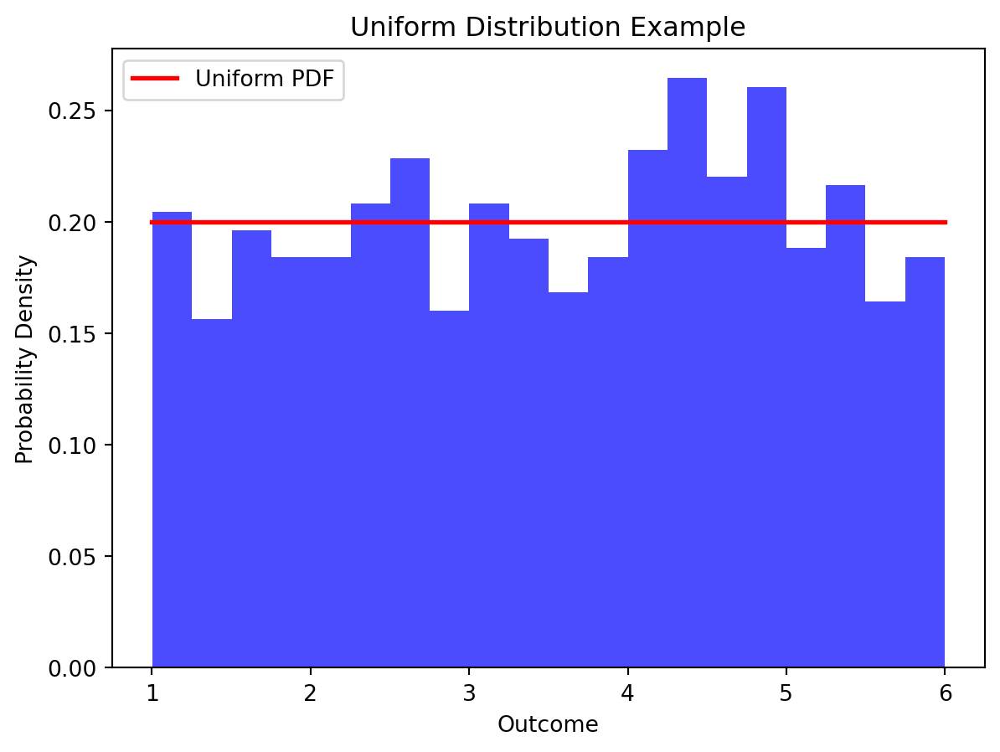
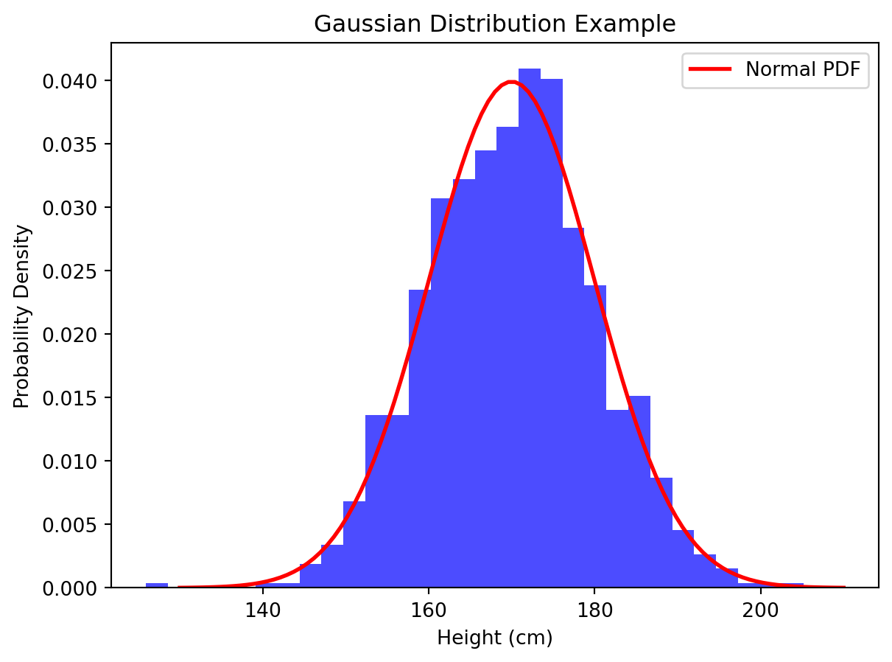
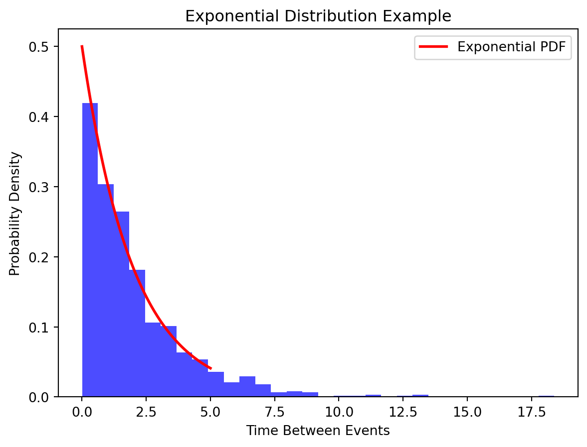

In the tapestry of our daily experiences, uncertainty weaves its intricate threads, creating a landscape where the unknown is an ever-present companion. From deciding whether to carry an umbrella to predicting stock market trends, uncertainty surrounds us, shaping our decisions, actions, and perceptions. It is this pervasive uncertainty that beckons us to explore the realm of probability theory, a powerful tool that empowers us to navigate the unpredictable nature of the world.
Enter probability theory, a mathematical framework designed to bring order to the chaos of uncertainty. Probability theory provides us with a systematic way to quantify and analyze uncertainty, offering a language to express the likelihood of different outcomes. It serves as a compass, guiding us through the fog of unpredictability and enabling us to make informed decisions in the face of ambiguity.
At its core, probability theory explores the likelihood of events occurring in various situations. It equips us with the means to assign numerical values to the uncertainty inherent in any scenario, allowing us to make reasoned predictions and choices. Whether predicting the outcome of a dice roll or estimating the probability of a rare disease occurrence, probability theory provides the analytical tools essential for decision-making in uncertain environments.
In the following exploration of probability theory and random variables, we will unravel the intricacies of this indispensable field, delving into its fundamental concepts, applications in real life, and the ways it shapes our understanding of uncertainty. Join us on this journey as we unveil the mathematical underpinnings that empower us to confront the unpredictable with confidence and insight.
Probability Theory
Probability is a measure of the likelihood that a particular event will occur. In the context of probability theory, we assign a numerical value between 0 and 1 to represent the probability of an event. A probability of 0 indicates that the event will not occur, while a probability of 1 signifies certainty that the event will occur. For events between these extremes, the probability reflects the degree of likelihood.
The foundation of probability theory lies in understanding the set of all possible outcomes of an experiment, known as the sample space. The sample space, often denoted by a random S, encompasses every conceivable outcome of a random process. For instance, when rolling a six-sided die, the sample space is {1, 2, 3, 4, 5, 6}. Understanding the sample space is crucial for defining and calculating probabilities.
An event is a subset of the sample space, representing a specific outcome or a combination of outcomes. Events are denoted by letters such as A, B, or C. For example, when rolling a die, the event of getting an even number can be denoted as A = {2,4,6}. Events can be simple (a single outcome) or compound (a combination of outcomes).
Key Probability Rules
1. Probability of any Event: The probability of an event A in the sample space S, P(A) cannot be negative or more than 1. The probability of all the events in the sample space S adds to 1.
P(A) ≥ 0
P(A) ≤ 1
P(S) = 1
2. Addition Rule: The addition rule is a fundamental concept that deals with the probability of the union of two or more events. For two events A and B, the probability of their union (A ∪ B) is given by:
P(A ∪ B) = P(A) + P(B) − P(A ∩ B)
This formula accounts for the overlap between events A and B to avoid double-counting. The probability of the intersection P(A∩B) is subtracted to ensure accuracy.
3. Bayes Rule: The multiplication rule governs the probability of the intersection of two events. For two events A and B, the probability of their intersection (A∩B) is given by:
P(A ∩ B) = P(A)⋅P(B∣A)
Here, P(B∣A) represents the conditional probability of event B occurring given that event A has occurred. It expresses the probability of B within the context of A.
4. Independence Rule: Two events, A and B, are considered independent if the occurrence (or non-occurrence) of one event has no influence on the probability of the other event.
P(A ∩ B) = P(A)⋅P(B)
P(A∣B) = P(A) and P(B∣A) = P(B)
These fundamental probability rules lay the groundwork for more complex probability calculations, enabling us to analyze and predict the likelihood of various outcomes in uncertain scenarios. They are essential tools for decision-making and risk assessment in diverse fields, from statistics to finance and beyond.
Types of Probability
Probability comes in various forms, each serving a specific purpose in different contexts. Here are three types of probability: classical, empirical, and subjective, along with real-world examples to illustrate each:
Classical Probability
Classical probability is based on equally likely outcomes in a sample space. It assumes that each outcome in the sample space is equally likely to occur.
Example: Consider a fair coin. The sample space is {Heads, Tails}, and since the coin is fair, each outcome is equally likely. The probability of getting Heads or Tails is 0.5 or 50%.
Empircal Probability
Empirical probability is based on observed data. It involves calculating the probability of an event by analyzing data collected from actual experiments or observations.
Example: Suppose you want to know the probability of rain in a particular city. Empirical probability would involve collecting data over time, noting the days with rain, and calculating the ratio of rainy days to the total number of days. If it rained on 30 out of 90 days, the empirical probability would be 0.333 or approximately 33.3%.
Subjective Probability
Subjective probability is based on personal judgment, beliefs, or opinions. It reflects an individual’s subjective assessment of the likelihood of an event.
Example: A doctor might assign a subjective probability to the likelihood of a patient having a particular illness based on their experience, knowledge, and the patient’s symptoms. This probability is subjective and varies from one medical professional to another.
Random Variables
A random variable is a mathematical function that assigns a real number to each outcome in the sample space of a random experiment. In simpler terms, it is a variable whose value is subject to variations due to chance or randomness. Random variables are used to model and quantify uncertainty in various situations.
Random variables play a crucial role in modeling uncertain quantities by providing a way to represent and analyze the variability inherent in random processes. They allow us to attach numerical values to outcomes of interest, facilitating the application of mathematical and statistical methods to describe, analyze, and make predictions about uncertain events.
Discrete Random Variable
Discrete random variables take values on a finite or countably infinite subset of R such as the integers. They are used to model discrete numerical quantities: the outcome of the roll of a die, the score in a basketball game, etc.
Continuous Random Variables
A continuous random variable is one that can take any value within a given range or interval. They are used to model quantities like: the height of a randomly selected person, the temperature at a specific location, etc.
Probability Distributions
In probability theory, a probability distribution describes the likelihood of various outcomes in a sample space. It provides a way to model and analyze uncertainty by assigning probabilities to different events. Probability distributions are fundamental tools in probability theory, offering insights into the nature of random variables and helping us make predictions about their behavior. Probability distributions help quantify the uncertainty associated with different outcomes of a random variable. They provide a systematic way to express the likelihood of each possible value.
Probability distributions form the basis for statistical inference. They allow us to make predictions about the population based on a sample and make informed decisions under uncertainty. Probability distributions are used to model various random processes in diverse fields such as physics, finance, biology, and engineering. They provide a mathematical framework to describe the probabilistic nature of real-world phenomena.
Uniform Distribution
The uniform distribution is characterized by all outcomes being equally likely. Each value within a specified range has the same probability of occurring. The probability density function (PDF) for a continuous uniform distribution over the interval [a,b] is given by:
f(x)= 1/b−a for a ≤ x ≤ b
Consider the example of rolling a fair six-sided die. Each face of the die has an equal chance of landing face up. If we assume the die is unbiased, the outcome of each roll follows a uniform distribution over the discrete values {1,2,3,4,5,6}. Each number has a probability of 1/6 of occurring.
import numpy as npimport matplotlib.pyplot as pltfrom scipy.stats import uniform# Define the range [a, b]a =1b =6# Generate a sample of 1000 values from a uniform distributionsample = uniform.rvs(loc=a, scale=b-a, size=1000)# Plot the histogram of the sampleplt.hist(sample, bins=20, density=True, alpha=0.7, color='blue')# Plot the probability density function (PDF)x = np.linspace(a, b, 100)plt.plot(x, uniform.pdf(x, loc=a, scale=b-a), 'r-', lw=2, label='Uniform PDF')# Add labels and a legendplt.xlabel('Outcome')plt.ylabel('Probability Density')plt.title('Uniform Distribution Example')plt.legend()# Show the plotplt.show()

Binomial Distribution
The binomial distribution models the number of successes in a fixed number of independent and identically distributed Bernoulli trials, where each trial has only two possible outcomes (usually termed as “success” and “failure”). The probability mass function (PMF) of a binomial distribution is given by:
P(X=k)=( n_p_k ) p^k (1-p)^(n-k)
where: n is the number of trials, k is the number of successes, p is the probability of success on a single trial, and (1−p) is the probability of failure on a single trial.
Consider the example of flipping a biased coin. Let’s say you have a coin that has a 60% chance of landing heads (success) and a 40% chance of landing tails (failure). If you flip this coin 5 times, you can model the number of heads obtained using a binomial distribution.
import numpy as npimport matplotlib.pyplot as pltfrom scipy.stats import binom# Define parametersn_trials =5# Number of coin flipsp_success =0.6# Probability of getting heads# Generate possible outcomes (0 to n_trials)x = np.arange(0, n_trials+1)# Calculate binomial probabilities for each outcomebinomial_pmf = binom.pmf(x, n_trials, p_success)# Plot the probability mass function (PMF)plt.stem(x, binomial_pmf, basefmt='b-', linefmt='b-', markerfmt='bo')plt.title('Binomial Distribution Example')plt.xlabel('Number of Heads')plt.ylabel('Probability')plt.show()
Gaussian Distribution
The Gaussian distribution, also known as the normal distribution, is a continuous probability distribution that is symmetric around its mean. It is characterized by its bell-shaped curve. The probability density function (PDF) of a normal distribution is given by:
f(x;μ,σ)= 1/σroot(2π) e -1/3(x-mu)/sigma^2
where: μ is the mean, σ is the standard deviation
import numpy as npimport matplotlib.pyplot as pltfrom scipy.stats import norm# Define parametersmean_height =170# Mean height in centimetersstd_deviation =10# Standard deviation in centimeters# Generate a sample of 1000 values from a normal distributionsample = np.random.normal(mean_height, std_deviation, 1000)# Plot the histogram of the sampleplt.hist(sample, bins=30, density=True, alpha=0.7, color='blue')# Plot the probability density function (PDF)x = np.linspace(mean_height -4*std_deviation, mean_height +4*std_deviation, 100)plt.plot(x, norm.pdf(x, mean_height, std_deviation), 'r-', lw=2, label='Normal PDF')# Add labels and a legendplt.xlabel('Height (cm)')plt.ylabel('Probability Density')plt.title('Gaussian Distribution Example')plt.legend()# Show the plotplt.show()

Poisson Distribution
The Poisson distribution models the number of events that occur in a fixed interval of time or space. It is often used for rare events with a known average rate of occurrence. The probability mass function (PMF) of a Poisson distribution is given by:
Insert formula
Insert defining elements
Consider a scenario where you are observing the number of customer arrivals at a store in a given hour, and you know that, on average, 5 customers arrive per hour. The Poisson distribution can be used to model the probability of observing a specific number of customer arrivals in that hour.
import numpy as npimport matplotlib.pyplot as pltfrom scipy.stats import poisson# Define parameteraverage_rate =5# Average number of events per interval# Generate possible outcomes (0 to 20 events)x = np.arange(0, 21)# Calculate Poisson probabilities for each outcomepoisson_pmf = poisson.pmf(x, average_rate)# Plot the probability mass function (PMF)plt.stem(x, poisson_pmf, basefmt='b-', linefmt='b-', markerfmt='bo')plt.title('Poisson Distribution Example')plt.xlabel('Number of Events')plt.ylabel('Probability')plt.show()
Exponential Distribution
The exponential distribution models the time between events in a Poisson process, where events occur continuously and independently at a constant average rate. It is characterized by its memoryless property, meaning that the probability of an event occurring in the next time unit is independent of the past. The probability density function (PDF) of an exponential distribution is given by:
Insert formula
Define elements
Consider a scenario where customers arrive at a service point, and the time between successive arrivals follows an exponential distribution. This can be applied to model the inter-arrival times in a queue, the time between calls at a call center, or the time between arrivals of buses at a bus stop.
import numpy as npimport matplotlib.pyplot as pltfrom scipy.stats import expon# Define parameterrate_parameter =0.5# Average number of events per unit time# Generate a sample of 1000 values from an exponential distributionsample = expon.rvs(scale=1/rate_parameter, size=1000)# Plot the histogram of the sampleplt.hist(sample, bins=30, density=True, alpha=0.7, color='blue')# Plot the probability density function (PDF)x = np.linspace(0, 5, 100)plt.plot(x, expon.pdf(x, scale=1/rate_parameter), 'r-', lw=2, label='Exponential PDF')# Add labels and a legendplt.xlabel('Time Between Events')plt.ylabel('Probability Density')plt.title('Exponential Distribution Example')plt.legend()# Show the plotplt.show()

Expected Value and Variance
The expected value of a discrete random variable X is a measure of the central tendency and is denoted by E(X). It is calculated as the sum of each possible value of X multiplied by its probability.
Insert Formula
Add an example in die setting
# Define the sample space and probabilities for each outcomeoutcomes = [1, 2, 3, 4, 5, 6]probabilities = [1/6, 1/6, 1/6, 1/6, 1/6, 1/6]# Calculate the expected valueexpected_value =sum(x * p for x, p inzip(outcomes, probabilities))print("Expected Value:", expected_value)
Expected Value: 3.5
For a continuous random variable X, the expected value is the integral of x times the probability density function (PDF).
Insert Formula
Consider a continuous random variable X with a uniform distribution over the interval [2,8].
from scipy.integrate import quad# Define the PDF for the uniform distributiondef uniform_pdf(x):return1/6if2<= x <=8else0# Calculate the expected valueexpected_value_continuous, _ = quad(lambda x: x * uniform_pdf(x), 2, 8)print("Expected Value (Continuous):", expected_value_continuous)
Expected Value (Continuous): 5.0
Variance measures the spread or variability of a random variable. For a discrete random variable X, the variance Var(X) is calculated as the sum of the squared differences between each value and the mean, weighted by their probabilities.
Insert Formula
Add an example in a die setting
# Calculate the variancevariance =sum((x - expected_value)**2* p for x, p inzip(outcomes, probabilities))print("Variance:", variance)
Variance: 2.9166666666666665
For a continuous random variable X, the variance is the integral of (x−E(X))^2 times the PDF.
Insert Formula
Consider a continuous random variable X with a uniform distribution over the interval [2,8].
A joint probability distribution describes the simultaneous behavior of two or more random variables. It provides the probabilities for every possible combination of values that the random variables can take.
Consider two six-sided dice, X and Y, representing the outcomes of two independent rolls. The joint probability distribution is a table indicating the probability of each possible pair of outcomes (x,y).
import numpy as np# Define the sample space and calculate joint probabilitiessample_space_X = [1, 2, 3, 4, 5, 6]sample_space_Y = [1, 2, 3, 4, 5, 6]joint_probabilities = np.zeros((6, 6))for i, x inenumerate(sample_space_X):for j, y inenumerate(sample_space_Y): joint_probabilities[i, j] =1/36# Since each outcome is equally likely# Display the joint probability distributionprint("Joint Probability Distribution:")print(joint_probabilities)
Marginal probability distributions focus on the probabilities of individual random variables without considering the others. In the context of joint distributions, these are obtained by summing or integrating over the values of the other variables.
Consider two six-sided dice, X and Y, representing the outcomes of two independent rolls. The joint probability distribution is a table indicating the probability of each possible pair of outcomes (x,y). Let’s calculate the marginal distributions of X and Y.
# Calculate marginal probabilitiesmarginal_X = np.sum(joint_probabilities, axis=1)marginal_Y = np.sum(joint_probabilities, axis=0)# Display the marginal probability distributionsprint("\nMarginal Probability Distribution of X:")print(marginal_X)print("\nMarginal Probability Distribution of Y:")print(marginal_Y)
Marginal Probability Distribution of X:
[0.16666667 0.16666667 0.16666667 0.16666667 0.16666667 0.16666667]
Marginal Probability Distribution of Y:
[0.16666667 0.16666667 0.16666667 0.16666667 0.16666667 0.16666667]
Conditional Probability
Conditional probability plays a crucial role in machine learning by allowing us to model the likelihood of an event given certain conditions. In the context of machine learning, it helps us make predictions based on observed evidence. Consider events A and B, the conditional probability of A given B is denoted as P(A|B), representing the probability of A occurring given that B has occurred.
In machine learning, conditional probability is fundamental for tasks such as classification, where we want to predict the probability of a certain class given some input features.
Bayes’ Theorem
Bayes’ Theorem is a powerful tool derived from conditional probability. It allows us to update the probability of a hypothesis based on new evidence. The formula is as follows:
Insert formula P(A∣B) = P(B∣A)⋅P(A)/P(B) Where: P(A∣B) is the posterior probability (probability of A given B). P(B∣A) is the likelihood (probability of B given A). P(A) is the prior probability (probability of A). P(B) is the marginal likelihood (probability of B).
Example:
Let’s consider a simple example where we want to predict the probability of a student passing an exam (event A) given that they attended a study session (event B). We have the following probabilities:
P(A)=0.7 (prior probability of passing) P(B∣A)=0.8 (likelihood of attending a study session given passing) P(B∣¬A)=0.4 (likelihood of attending a study session given not passing)
# Define probabilitiesP_A =0.7# Prior probability of passingP_B_given_A =0.8# Likelihood of attending a study session given passingP_B_given_not_A =0.4# Likelihood of attending a study session given not passing# Calculate marginal likelihood P(B)P_B = P_B_given_A * P_A + P_B_given_not_A * (1- P_A)# Calculate posterior probability P(A|B) using Bayes' TheoremP_A_given_B = (P_B_given_A * P_A) / P_Bprint(f"The probability of passing given attending a study session is: {P_A_given_B:.2f}")
The probability of passing given attending a study session is: 0.82
In this example, we use Bayes’ Theorem to update our prior belief (probability of passing) based on new evidence (attending a study session). The calculated posterior probability gives us an updated estimate of the likelihood of passing given the observed evidence.
This demonstrates how conditional probability and Bayes’ Theorem are applied in machine learning for making predictions and updating beliefs based on new information.
Probabilistic Models: Naive Bayes Classifier
One of the classic examples of a probabilistic model in machine learning is the Naive Bayes classifier. This algorithm is based on Bayes’ Theorem and assumes that features are conditionally independent given the class. Despite its simplicity, Naive Bayes performs well in various classification tasks, especially in text classification.
The Bayes’ theorem in the context of classification is as follows,
P(A∣B) = P(B∣A)⋅P(A)/P(B)
In the context of classification: P(A∣B) is the probability of class A given the observed features B. P(B∣A) is the likelihood of observing features B given class A. P(A) is the prior probability of class A. P(B) is the evidence probability, which is the same for all classes and can be ignored when comparing probabilities.
The “naive” assumption in Naive Bayes is that the features are conditionally independent given the class. This means that the presence or absence of a particular feature is assumed to be unrelated to the presence or absence of any other feature given the class.
The Naive Bayes classifier calculates the probability of each class given the observed features and assigns the class with the highest probability as the prediction.
Predicted Class = argmax_c P(class=c∣features)
Let’s consider a text classification example where we want to classify emails as spam or not spam based on the occurrence of certain words.
from sklearn.naive_bayes import MultinomialNBfrom sklearn.feature_extraction.text import CountVectorizer# Sample data: emails and their labelsemails = [ ('Get a brand new iPhone for free!', 'spam'), ('Meeting at 2 pm in the conference room', 'not_spam'),# Add more examples]# Separate data into features (X) and labels (y)X, y =zip(*emails)# Convert text data to numerical format using CountVectorizervectorizer = CountVectorizer()X = vectorizer.fit_transform(X)# Create and train the Multinomial Naive Bayes classifierclassifier = MultinomialNB()classifier.fit(X, y)# Make predictions for new datanew_email = ['Congratulations! You have won a million dollars!']new_email_vectorized = vectorizer.transform(new_email)prediction = classifier.predict(new_email_vectorized)print(f"The predicted class for the new email is: {prediction[0]}")
The predicted class for the new email is: not_spam
In this example, we use the MultinomialNB class from scikit-learn to implement a Naive Bayes classifier. We have considered Multinomial Naive Bayes as it is suitable for discrete data, often used in text classification. It also assumes features represent word counts or frequencies. The CountVectorizer is used to convert text data into a numerical format that the classifier can handle. The model is then trained on the training set and evaluated on the test set.
This demonstrates how probability theory, particularly Bayes’ Theorem, is applied in a machine learning context to build a probabilistic model for classification. Naive Bayes classifiers are widely used in spam detection, sentiment analysis, and other text classification tasks.